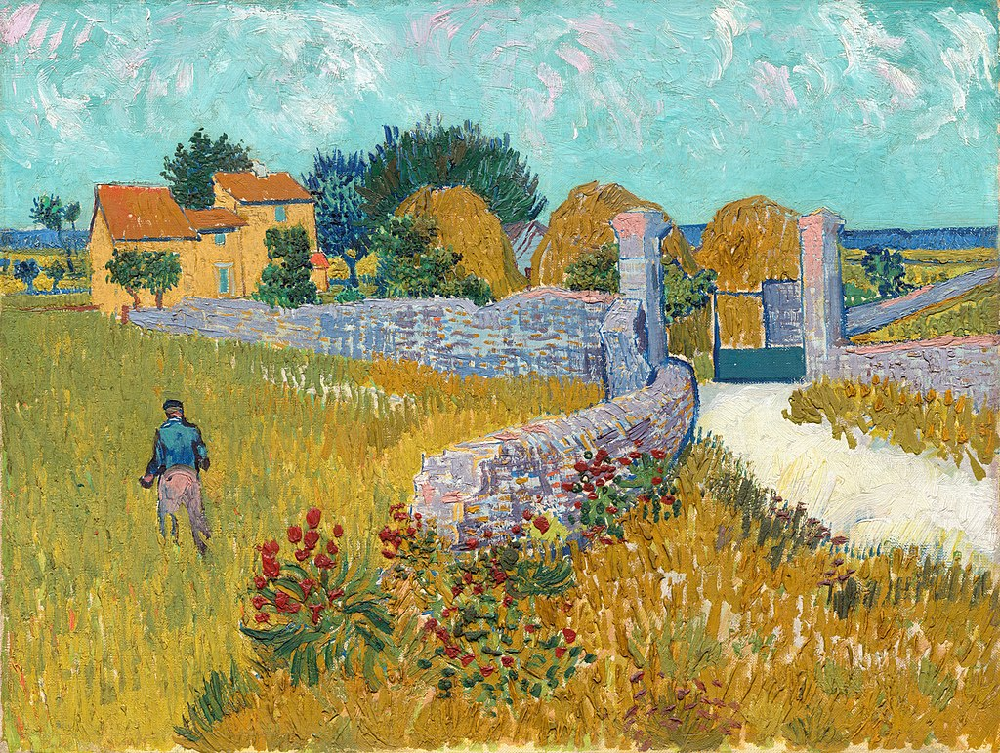

<head>
<meta charset="UTF-8" />
<meta name="keywords" content="drawing, painting" />
<meta name="description" content="drawings by Sunjy" />
<title>Sunjy</title>
<link rel="shortcut icon" type="image/x-icon" href="../../mImages/mCommon/favicon.ico" media="screen" />
<link rel="stylesheet" type="text/css" href="../../mCsses/mCommon/mCssA.css" />
<link rel="stylesheet" type="text/css" href="../../mCsses/mCommon/mCssB.css" />
<link rel="stylesheet" type="text/css" href="../../mCsses/mCommon/mCssC.css" />
<link rel="stylesheet" type="text/css" href="../../mCsses/mCommon/mCssD.css" />
<link rel="stylesheet" type="text/css" href="../../mCsses/mContent/mCssA.css" />
<link rel="stylesheet" type="text/css" href="../../mCsses/mContent/mCssB.css" />
<link rel="stylesheet" type="text/css" href="../../mCsses/mContent/mCssC.css" />
<link rel="stylesheet" type="text/css" href="../../mCsses/mContent/mCssD.css" />
</head>
<script type="text/javascript" src="../../mScripts/mContent/mContentAA.js" /></script>
<script type="text/javascript" src="../../mScripts/mContent/mContentAB.js" /></script>
<script type="text/javascript" src="../../mScripts/mContent/mContentAC.js" /></script>
<script type="text/javascript" src="../../mScripts/mContent/mContentAD.js" /></script>
<script type="text/javascript"></script> 
<script type="text/javascript">
document.write('<div class="mImgAbsolute"></div>');
/*
document.write('<p class="mFontSizeBColor" />From a white paper...</p>');
document.write('<table class="center"><tr><td>');
document.write('');
document.write('</td></tr></table>');
*/
</script>


<script type="text/javascript">
document.write('<p class="mFontSizeBColor" />Farmhouse in Provence</p>');
document.write('<p class="mFontSizeSColor" />“Farmhouse in Provence” by Vincent van Gogh depicts the entrance gate to a farm with haystacks beyond the gate and with the farmhouse in the background.<br><br>When Van Gogh arrived in Arles in February 1888, the landscape was covered with snow, but it was the sun that he enjoyed in Provence. And this painting captures the brilliant light that he sought.<br><br>Van Gogh simplified the forms and reduced the scene to the flat patterns he admired in Japanese woodblock prints. Arles, he said, was:<br><br>“the Japan of the South.”<br><br>Van Gogh used pairs of complementary or contrasting, colors which together intensified the brilliance and intensity of one another’s colors:<br>•the orange of the farmhouse walls against the blue window and door<br>•the red flowers against the green plants<br>•the gold-green fields against the blue, lavender dividing walls<br>•the pink clouds against the turquoise sky.<br><br>The complementary, contrasting colors brought an intensity to his work. Van Gogh mentioned the liveliness and interplay of the colors as:<br><br>“a wedding of two complementary colors, their mingling and opposition, the mysterious vibrations of two kindred souls.”<br><br>Van Gogh had become familiar with Michel Eugène Chevreul’s laws of weaving to maximize the intensity of colors through their contrast to adjacent colors.<br><br>He used this insight to add two colors of the same degree of vividness and brightness, placed next to one another, to produce an intense visual stimulation.<br><br>Van Gogh’s time in Arles was amazingly productive. In about 444 days, he produced more than 200 paintings, about 100 drawings, and wrote more than 200 letters.<br><br>To his brother, Theo, he wrote:<br><br>“Painting … promises to become more subtle—more like music and less like sculpture—and above all, it promises color.”<br><br>At the time that Van Gogh created this painting, he was 35 years old. Living in Arles, in southern France, he was producing some of his best work, such as fields, farmhouses, and people of the Arles, Nîmes, and Avignon area.<br><br>The area was quite different from what he’d known in the Netherlands and Paris. The climate was hot and dry, and the colors were vivid. The terrain was diverse and varied from plains to mountains.<br></p>');
document.write('<table class="center" /><tr><td>');
document.write('<br>When Van Gogh arrived in Arles in February 1888, the landscape was covered with snow, but it was the sun that he enjoyed in Provence. And this painting captures the brilliant light that he sought.<br><br>Van Gogh simplified the forms and reduced the scene to the flat patterns he admired in Japanese woodblock prints. Arles, he said, was:<br><br>“the Japan of the South.”<br><br>Van Gogh used pairs of complementary or contrasting, colors which together intensified the brilliance and intensity of one another’s colors:<br>•the orange of the farmhouse walls against the blue window and door<br>•the red flowers against the green plants<br>•the gold-green fields against the blue, lavender dividing walls<br>•the pink clouds against the turquoise sky.<br><br>The complementary, contrasting colors brought an intensity to his work. Van Gogh mentioned the liveliness and interplay of the colors as:<br><br>“a wedding of two complementary colors, their mingling and opposition, the mysterious vibrations of two kindred souls.”<br><br>Van Gogh had become familiar with Michel Eugène Chevreul’s laws of weaving to maximize the intensity of colors through their contrast to adjacent colors.<br><br>He used this insight to add two colors of the same degree of vividness and brightness, placed next to one another, to produce an intense visual stimulation.<br><br>Van Gogh’s time in Arles was amazingly productive. In about 444 days, he produced more than 200 paintings, about 100 drawings, and wrote more than 200 letters.<br><br>To his brother, Theo, he wrote:<br><br>“Painting … promises to become more subtle—more like music and less like sculpture—and above all, it promises color.”<br><br>At the time that Van Gogh created this painting, he was 35 years old. Living in Arles, in southern France, he was producing some of his best work, such as fields, farmhouses, and people of the Arles, Nîmes, and Avignon area.<br><br>The area was quite different from what he’d known in the Netherlands and Paris. The climate was hot and dry, and the colors were vivid. The terrain was diverse and varied from plains to mountains.<br>" />');
document.write('</td></tr></table>');
</script>


